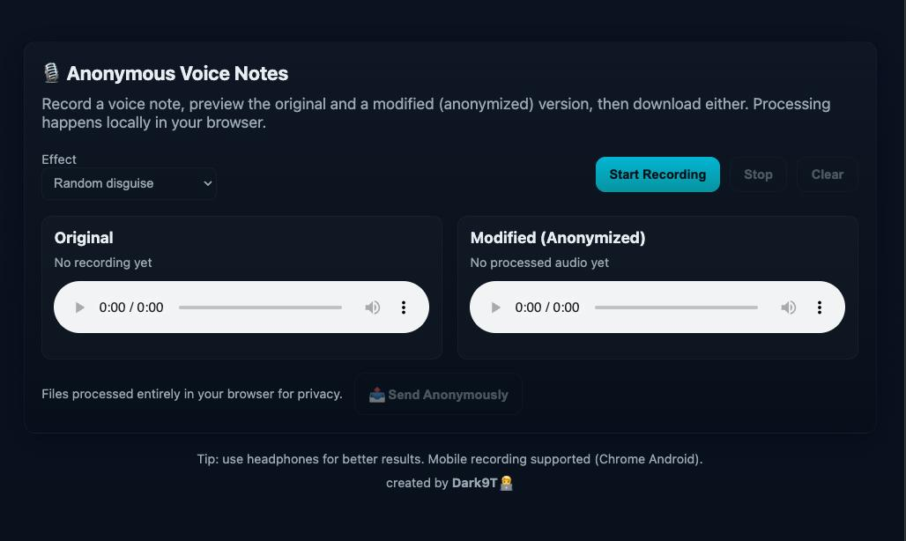

Record anonymous voice notes directly in your browser, apply disguising effects, preview both the original and modified versions, and send or upload them securely. All processing happens locally on your device for maximum privacy.
frontend/
│── index.html # Main app UI
│── styles.css # Custom styling (inlined in HTML)
│── script.js # Recording & audio processing logic
│── README.md # Project documentation
Clone Repo
git clone https://github.com/<your-username>/<repo-name>.git
cd <repo-name>/frontend
Run Locally
Simply open index.html in your browser. No build tools required ✅.
Deploy
You can host this frontend on Vercel, Netlify, or GitHub Pages. Just drag and drop or connect your repo.
The frontend uploads voice notes to your backend API:
POST https://mozibix-anonymous-voice-notes-backe.vercel.app/api/upload-voice
Payload:
audio → Modified audio file (WAV).effect → Selected disguise effect.userAgent → Browser user agent string.
created by Dark9T 🧑‍💻